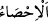
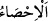
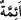

yedi kat daha üstündür.”[112] Çünkü bir gün bir gecedeki farz namazlar on yedi rekattır.
Revâtib[113] sünnetler ise on rekattır. Toplam yirmi yedi rekattır.
Ulemânın çoğuna göre cemaat vâcibdir. Bazıları sünnet-i müekkede olduğunu
söylemiştir. Bir hadîste şöyle buyrulmuştur: “İçimden öyle geçiyor ki, bir adama
insanlara imam olmasını emredeyim, ben de gidip cemaatten geri kalan adamlara
bakayım ve onların evlerini yakayım.”[114] Bu hadîs cemaate gelmeyen kişinin evini
başına yakmanın câiz olduğuna delâlet eder. Çünkü Rasûlullah (s.a.)’in mâsiyete/günah
işlemeye niyetlenmesi câiz değildir. Çünkü bu günahtır. Vâcibi ya da müekked sünnetin
terkinde bu kişinin evinin yakılması câiz olursa farzı terk edilmesi hakkında ne
düşünürsün!
Bir hadîste şöyle buyrulmuştur: “Karanlıklarda camilere yürüyüp (cemaatle
namaza) gideni kıyamette tam nur ile müjdeleyin.”[115] Burada her karanlığın değil
şiddetli karanlığın cemaati terk etmek için mâzeret olduğuna işâret vardır. Hadîsin
lafzının mutlak olarak kullanılması, efdal olanı arayanın bâriz bir mâzeret olması
dışında her ne sûrette olursa olsun cemaatten geri kalmaması gerektiğini îmâ etmektedir.
Cemaatten geri kalmayı mübah kılan özürler şunlardır: Teyemmümü mübah kılan
hastalık, kişinin el ve ayağının çaprazlama kesik olması, kişinin felçli olması, yürümeye
muktedir olamaması, âmâ olması, yağmur, çamur, şiddetli soğuk, sahih olan görüşe göre
şiddetli karanlık, kezâ sultandan ya da başka zâlim ve zorbalardan korkmak.
Allah bizi ve sizi bütün ömründe emrini yerine getirenlerden eylesin.
“Biz,” ister insanın yaptığı bir şey ister başkası, her ne olursa olsun “her şeyi apaçık
bir kitapta” olmuş ve olacak her şeyi izhar edip gösteren şânı yüce bir asılda, yâni
levh-i mahfuzda “sayıp yazmışızdır.” Zabt ve beyan etmişizdir.
Şeyhzâde der ki: “
”nın asıl mânâsı saymak demektir. Sonra mecaz olarak beyan
ve koruma/muhâfaza mânâsında kullanılmıştır. Çünkü saymak beyan ve koruma için
olur. el-Müfredât’ta der ki: “
” sayı ile elde etmektir. “
(çakıl taşları)”
kelimesinden türemiştir. Bu kelimenin saymak mânâsında kullanılması, bizim
parmaklarla saydığımız gibi onların da çakıl taşlarıyla saymaları sebebiyledir.
Levh-i mahfûza uyulup tabi olunduğu için “imâm” denilmiştir. Râğıb der ki: “İmâm”
kendisine uyulan demektir. Bu söz ve işinde kendisine uyulan insan, kitap veya başka bir
şey olsun, hak yolda veya bâtıl yolda olsun farketmez. Çoğulu “
”dir. “Her insan
topluluğunu imamları/önderleri ile birlikte çağıracağımız o günde...” (el-İsrâ,
17/71) âyetinde “imâm” kendisine uydukları kimse demektir. Bunun onların kitapları
olduğu da söylenmiştir. “Biz, her şeyi apaçık bir kitapta (levh-i mahfuz’da) sayıp
yazmışızdır.” âyetinde “imâm”ın levh-i mahfuza işâret olduğu da söylenmiştir.”
“Sayıp yazmak”ta hem terğîb hem de terhîb (teşvik ve sakındırma) vardır. Çünkü “el-
Muhsî”, her varlığı hallerinden hiçbir hal kendisinden gizli kalmadığı gibi
zerrelerinden hiçbir zerre gizli kalmayacak şekilde bütün ayrıntılarıyla bilen; eşyanın
hesabını ve sayılabilen her şeyi bilip kuşatandır. Allah Teâlâ’nın “el-Muhsî” olduğunu